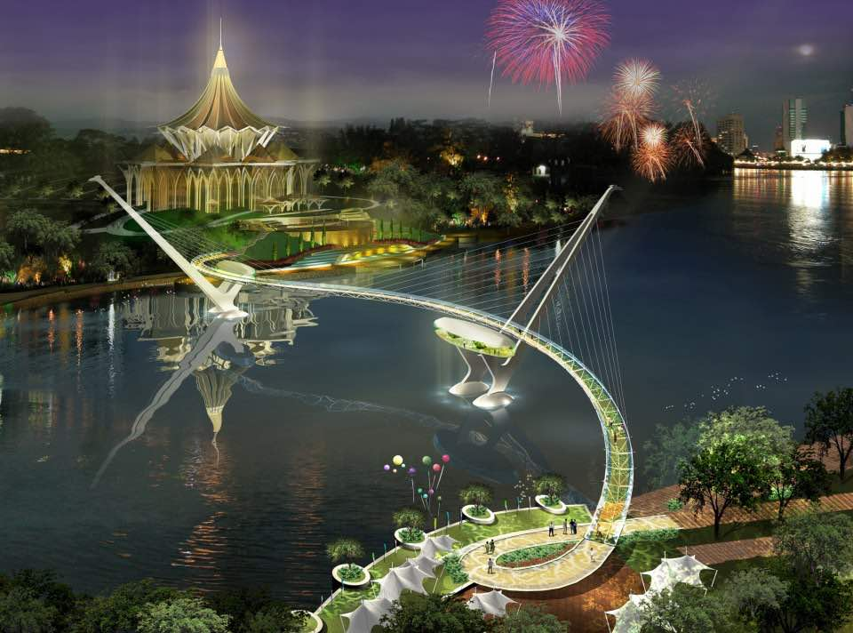
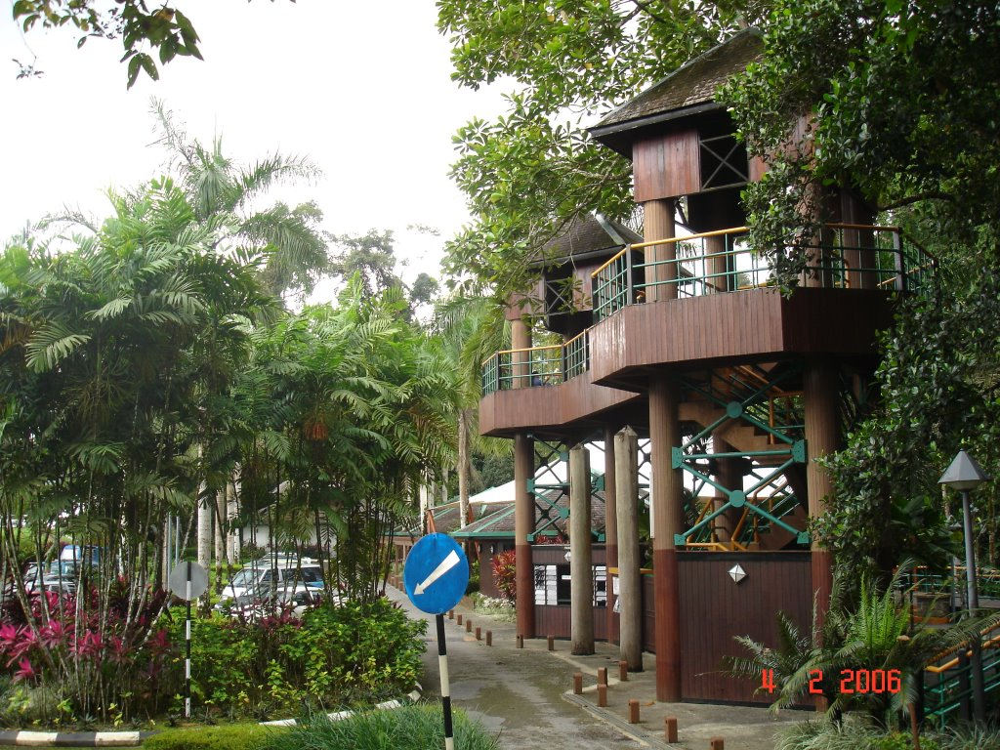
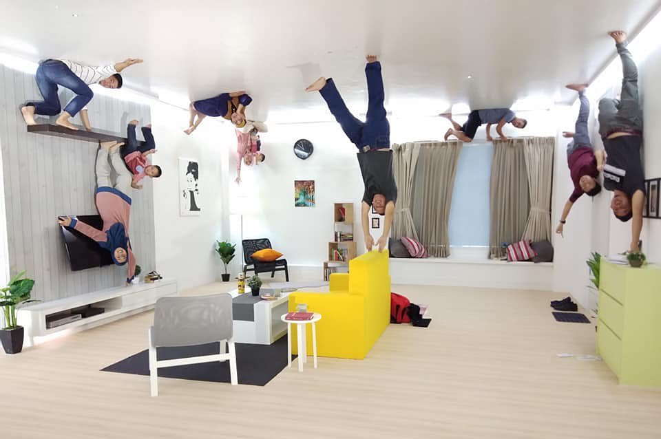
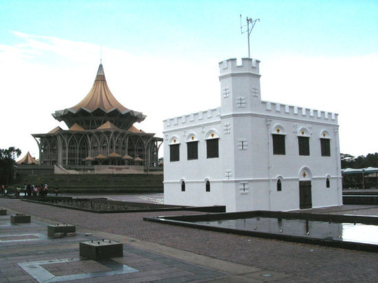
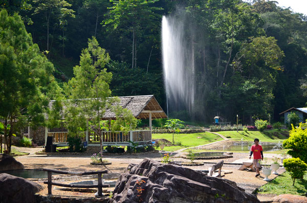

Sarawak on Borneo Island is the largest state in Malaysia. Dense and almost impenetrable jungle covers its vast interior, interspersed with caves and national parks. Long coasts stretch across the South China Sea housing small cities, including Kuching, Sibu and Miri. Travellers usually start in Kuching, affectionately called ‘City of Cats’. Check out the Kuching Waterfront, Astana (Palace) and Carpenter Street. Culture Trip recommends all travellers visit Bako National Park, where tame proboscis monkeys, endemic to Borneo, watch curiously near Park HQ. If you have more time, head to Sarawak’s nationwide famous caves. Niah National Park near Miri is the most accessible.

Darul Hana Bridge
The Darul Hana Bridge in Kuching, Sarawak, is intended to complement the new State Legislative Assembly Complex (DUN) to form a dynamic urbanscape—set against elegant parks and water features—that will be intrinsically linked to the identity of the city.
Address: 93000 Kuching, Sarawak

Matang Family Park
Nature park offering scenic trails through rainforest areas, picnic facilities & babbling streams.
Address: Jalan Matang, Petra Jaya, 93050 Kuching, Sarawak

Upside Down House Kuching
Quirky locale featuring upside-down decorated rooms & displays, popular for fun photos.
Address: Ground Floor, No.281-1-1, Lot 281, Section 48, KTLD, Block H, Taman Sri Sarawak Jalan Tun Abdul Rahman, Off, Jalan Borneo, 93100 Kuching, Sarawak

Square Tower (Sarawak)
The building was originally constructed in 1879 as a prison. It was then later turned into a fortress.
Address: Jalan Gambier, Jalan Main Bazaar, 93000 Kuching, Sarawak

Annah Rais Hotspring
Annah Rais has a hot spring which is commonly knows as the Annah Rais Natural Jungle Spa. This hot spring is a natural feature caused by underground water being heated by geothermal forces and brought to the surface, where it empties its hot water into Sungai Semadang.
Address: 93, Annah Rais Longhouse, Jalan Puncak Borneo, Kuching, Malaysia